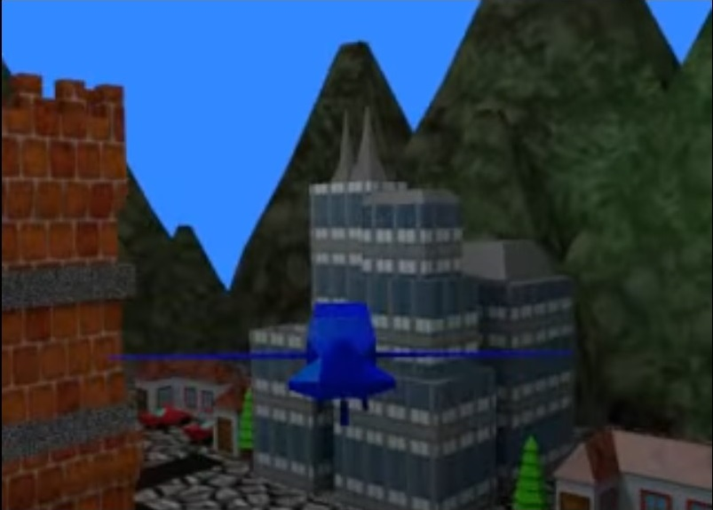

Blender
Descripción: El trabajo final para Blender consistió en realizar un video en donde se mostrara el movimiento de un avión, nave, o dron sobrevolando una ciudad.
Características:
- La ciudad tenía al menos 5 edificios/casas/estructuras diferentes
- Cada objeto tenía un color o una textura
- Se hizo uso de una trayectoria curva que logró recorrer la mayor parte de la ciudad
- El avión seguía correctamente la trayectoria
- La cámara seguía correctamente el avión
- La toma de la cámara abarcó tanto al avión como a la ciudad
Imágenes:

Video:
Opinión personal: Este fue uno de los proyectos que más me gustaron, ya que se me hace muy interesante todo lo relacionado con el modelado de objetos en 3D.